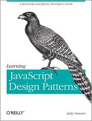

Learning JavaScript Design Patterns

◎本文原載網站製作學習誌，原文章連結按此。
在看到玩物尚志介紹的「O’Reilly Blogger Review Program 邀請部落客寫書評」這篇文章後，讓我對這個活動非常有興趣；因此，我也報名了這個活動，並選擇了「Learning JavaScript Design Patterns」一書來做 Review 的主角。
閱讀心得

- 書名： Learning JavaScript Design Patterns
- Addy Osmani
- O’Reilly Media
第 1 章至第 8 章對模式的由來與目的做了簡單的介紹，對模式不熟悉的朋友可以從這幾章的內容來瞭解模式；當然大部份的理論內容算是把經典的設計模式書籍做了一個整理，已經對模式有所概念的朋友可以快速複習或是跳過不看。
第 9 章介紹了部份 GoF 所包含的模式，這裡最棒的部份是作者會透過一些實際的例子來說明這些模式的應用場合。
例如 Facade 模式，作者就以 jQuery 是如何把多種複雜的 Browser API 包裝起來為例；而 Flyweight 模式，則是從瀏覽器如何管理 DOM Tree ，減少記憶體的損耗來介紹。這麼一來，讀者可以很清楚的瞭解這些模式想要解決的問題，也能學到許多跟瀏覧器打交道的技巧。
不過因為 JavaScript 為 prototype-based 的語言，因此有些以 class-based 語言所發展出來的模式實作方式就無法直接用 JavaScript 來呈現。
只是作者在某些模式上的見解似乎跟以往我所理解的模式有所不同，最明顯的例子是 Decorator 模式；作者在這個模式一開始的說明和範例，似乎是把它當成 subclassing 的替代方案。
但事實上在 Decorator 模式中，以 Decorator 所包覆的物件對 client 程式來說應該是透明的，而不會加入其他額外的方法。這點我認為「 JavaScript Patterns 」一書中對 Decorator 的介紹，才較為符合 Decorator 模式的精神。
不過除此之外，作者在本章所列舉的模式實作方式及技巧的介紹，都非常值得參考。
第 10 章談到 MV* (MVC / MVP / MVVM) 模式，這裡作者採用現有的 Framework / Library 來解釋。在 MVC / MVP 的部份，用到 Backbone.js / Spine.js 來做介紹；而在 MVVM 的部份，則是以 KnockoutJS 搭配時下最流行的 Todo 為範例。
不過要這章主要是介紹 MV 的觀念，因此如果想瞭解這些 Framework 或是 Libray 更進一步的資訊，就要再參考其官方資源。這麼一來，會未接觸過這些工具的讀者，在理解 MVC 時要多花點精神。
第 11 章則是介紹了瀏覽器端及伺服器端 JavaScript 模組載入的模式，分別從 AMD 及 CommonJS 這兩個規範做為進入點。但這邊我想如果可以用基本的方式介紹原理的話，會讓讀者有更深刻的認知，而不會因為直接切入工具的實作而產生困惑。
第 12 章很簡潔地說明 jQuery 中用了哪些 GoF 模式。我個人覺得這是很不錯的分析，從這裡可以看到模式的精神發揮得很徹底：重義不重形。但這裡的 Proxy 模式實作方式，跟我以往所理解的有所落差；作者是直接用 jQuery.proxy 這個函式來說明，讓 jQuery 物件同時扮演了執行層與代理層，這點倒是滿有趣的。
第 13 章的重點放在 jQuery Plugin ，從最簡單的 plugin 建構模式、 jQuery UI 、 jQuery Mobile 、 RequireJS 到如何用 namespace 來管理 JavaScript 。但是這章的問題也在於它的結構過大，國外的讀者也認為應該把 Namespace Patterns 的部份獨立成一章。
第 14 章是整本書的結論，但似乎有點簡短而沒有必要。
排版問題
本書的電子版在第 9 章中，有數個模式的 UML 圖是錯置的。分別是：
- 第 47 頁 - Figure 9-4. Publish/Subscribe 錯置為 Mediator Pattern 。
- 第 60 頁 - Figure 9-5. Mediator pattern 錯置為 Prototype Pattern 。
- 第 69 頁 - Figure 9-6. Prototype pattern 錯置為 Command Pattern 。
- 第 72 頁 - Figure 9-7. Command pattern 錯置為 Facade Pattern 。
- 第 74 頁 - Figure 9-8. Facade pattern 錯置為 Factory Pattern 。
- 第 77 頁 - Figure 9-9. Factory pattern 錯置為 Mixins 。
- 第 83 頁 - Figure 9-10. Mixins 錯置為 Decorator Pattern 。
- 第 87 頁 - Figure 9-11. Decorator pattern 錯置為 Flyweight Pattern 。
而原本的 Publish/Subscribe UML 圖示，則跟第 42 頁的 Figure 9-3. Observer pattern 放在一起。
總結
我覺得這本書可以算是對常見的 JavaScript 模式做了一個總覽，並輔以實際應用來讓讀者對模式有所共鳴，因此可以很明顯地看出作者偏好用實際的 Framework 或是 Library 來解說。不過從另一個角度來看，透過工具的介紹也可能會造成讀者對模式基本原理的迷失。
如果你是 jQuery 粉絲的話，這本書也是非常棒的參考書籍。從 jQuery 的設計理念到功能擴充等，都可以看到本書非常精采的介紹。
不過我對這本書的編排有點小小的失望，誠如 found_drama 對這本書的 review 中所提到的：
The structure of the book is important. How the information flows from one chapter to the next is important.
整體而言，本書在技術面的價值還是非常高的。對於想要瞭解模式是如何在 JavaScript 實現，或是對 jQuery 原理想更進一步瞭解的朋友，都推薦一讀。